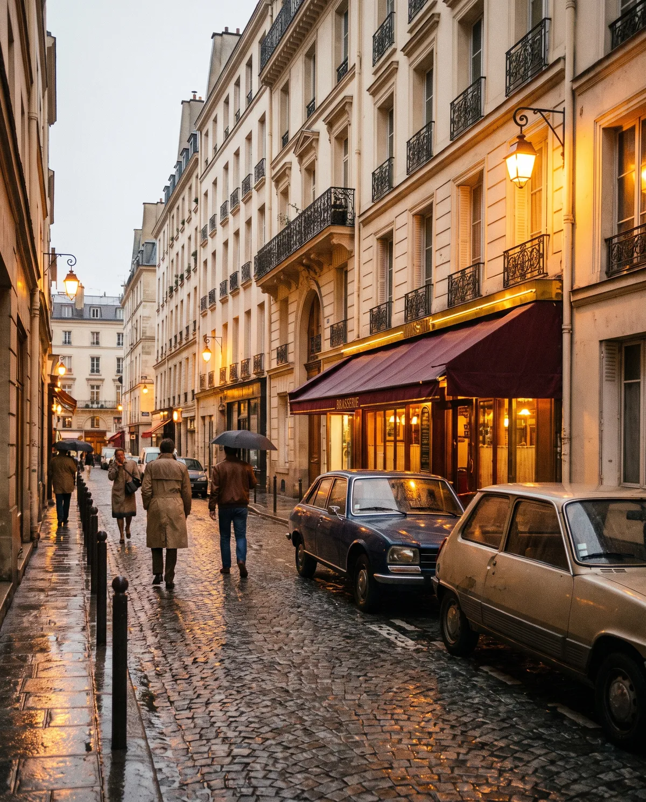
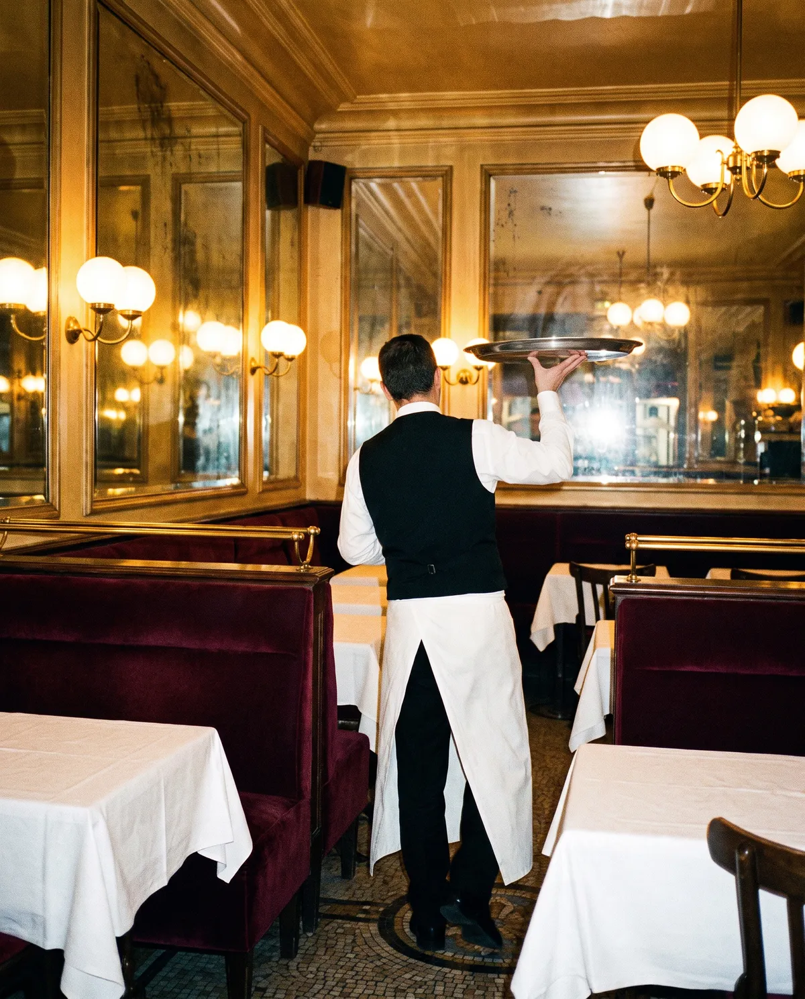
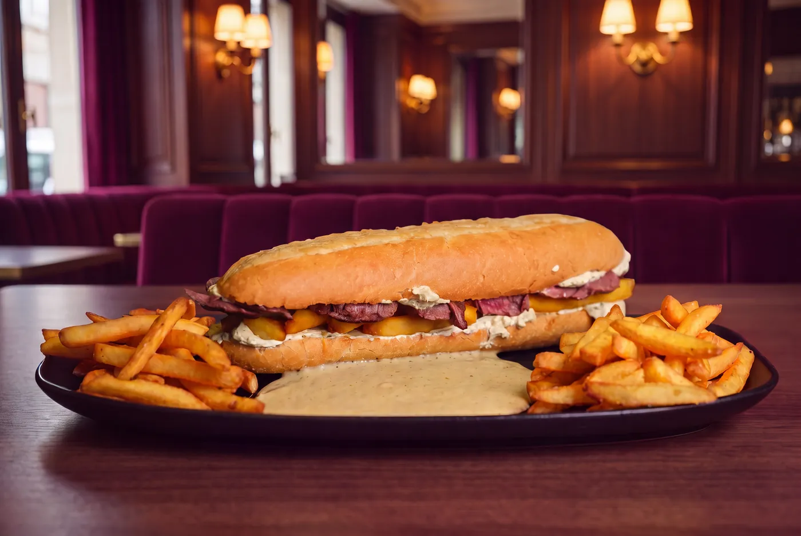
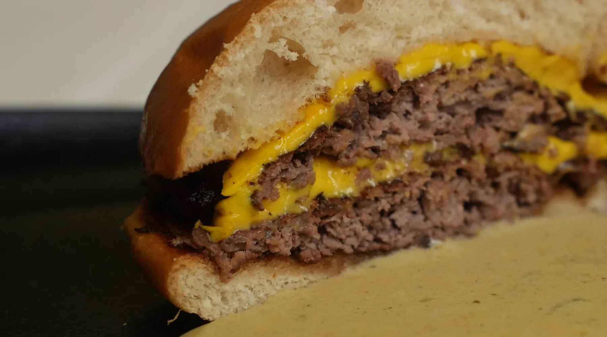

Genève
Ouverture le 27 novembre
APB du Lac. Commandez en ligne et passez prendre votre burger, ou installez-vous.
- Adresse
- Au bord du lac (adresse exacte à confirmer)
- Horaires
- À confirmer
Sauce Café de Paris · depuis les années 1980
01Le geste, filmé en cuisine/ 03
Écrasé d'un coup sur la plaque brûlante. La croûte se forme en quelques secondes.
Trois villes, une seule sauce. Choisissez la vôtre.
Ouverture le 27 novembre
APB du Lac. Commandez en ligne et passez prendre votre burger, ou installez-vous.
Au port
Aujourd'hui, le Patron, d'origine phénicio-libanaise, revient à ses origines et ouvre son premier restaurant en Espagne, sur l'île d'Ibiza.
En livraison
La carte d'Atelier Paris Burger, livrée chez vous.
Notre histoire
Une recette née dans la tradition des grandes sauces d'entrecôte, travaillée à Paris, transmise jusqu'à nous.

Années 1980
Introduite et travaillée à Paris, elle est servie à L'Entrecôte Café de Paris, notamment rue Feydeau.

Trois adresses
Rue Feydeau, rue de Ponthieu, rue François-Miron. De salle en salle, le geste se transmet et la recette s'affine.
Puis Cannes
La recette descend sur la Côte d'Azur. Une adresse à Cannes, la même exigence.

Aujourd'hui
Nous ne revendiquons pas l'invention de la sauce. Nous en assurons la continuité, dans deux formats d'aujourd'hui : le burger et la baguette.

« Inspirée par la tradition, élevée à l'excellence depuis plus de quarante ans. »
Le geste d'une brasserie parisienne, au format d'aujourd'hui.
Le 27 novembre, à Genève, nous offrons 200 burgers. Réservez le vôtre et choisissez votre heure : un QR code arrive par e-mail.
Dans votre téléphone, sans application. Un tampon à chaque passage, le dixième burger offert.